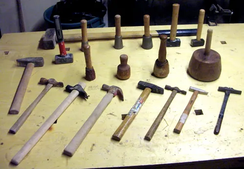

Before any project, make sure you are well equipped and well protected. Here are the tools worth owning, the habits that keep you safe, and the honest art of knowing a tool's limits — and your own.

The tools worth owning
You do not need a workshop full of equipment to handle most of a home's needs. A modest, well-chosen kit covers nearly everything in these guides, and good tools kept clean and sharp will outlast cheap ones many times over.
What you'll need
- A claw hammer and an assortment of nails
- Screwdrivers — a flat-head and a cross-head, or one with changeable tips
- A cordless drill-driver, which saves hands and wrists enormously
- An adjustable wrench and a pair of pliers
- A tape measure, a pencil, and a spirit level
- A utility knife, sandpaper, and a tube of multi-purpose lubricant
- A stud finder and a selection of wall anchors
- A sturdy step stool with a handrail
Tip: A cordless drill-driver is the one power tool worth buying first. It drives screws with a fraction of the effort of a screwdriver — a real kindness to tired hands and wrists — and makes shelves, flat-pack furniture, and dozens of jobs far easier.
Using tools safely
Most tool injuries come from haste, dull blades, or a lapse in attention — all of which are avoidable. A few steady habits keep every project safe.
- Keep blades sharp. A dull blade needs more force and slips more easily than a sharp one.
- Cut and push away from your body, and keep your other hand clear of the blade's path.
- Unplug a power tool or remove its battery before changing a blade or bit.
- Clamp your work down rather than holding it by hand when you can.
- Work in good light, at a comfortable height, and stop when you feel tired.
Safety first: Never stand on a chair, a box, or the top step of a ladder to reach something. Use a proper step stool or ladder with someone nearby for anything above shoulder height. A fall is the most common and most serious home-project injury, and it is almost entirely preventable.
Protecting your eyes, ears, and lungs
Safety gear is cheap, and the harm it prevents is not. A pair of safety glasses costs a few dollars; an eye injury can cost your sight. Make a habit of reaching for the gear as naturally as you reach for the tool itself, and keep it stored right alongside your tools so there is never an excuse to skip it.
- Eye protection — safety glasses for any cutting, drilling, hammering, or anything that can throw a chip or splash.
- A dust mask — for sanding, sawing, or any dusty work; your lungs will thank you.
- Ear protection — for loud power tools used for any length of time.
- Work gloves — for handling rough lumber, sharp metal, or anything with splinters.
Caring for your tools
Tools that are looked after will serve you for decades and work better every time you pick them up; neglected ones rust, blunt, and let you down just when you need them. The care they ask is small and satisfying.
- Wipe metal tools clean and dry after each use so they do not rust; a quick pass with an oily rag protects them further.
- Keep cutting edges sharp — a sharpened blade or chisel is safer and far easier to use than a dull one.
- Store tools somewhere dry, hung up or in a box, rather than left out in the damp of a shed floor or the yard.
- Charge cordless tool batteries now and then even when idle, and store them out of extreme heat or cold.
- Check handles for cracks and tighten any loose heads before use.
A tidy, cared-for kit is a pleasure to work with and a kindness to your future self. There is nothing more disheartening than reaching for a tool in the middle of a job and finding it rusted, blunt, or with a flat battery. Ten minutes of care after a project saves a great deal of frustration before the next one, and well-kept tools can become heirlooms, handed down in good working order to a child or grandchild who catches the handy habit from you.
Buying tools wisely
You need not spend a fortune, but the cheapest tools are rarely a bargain — they blunt quickly, break under strain, and can even be unsafe. A sensible middle path serves most people best: buy decent mid-range tools for the things you use often, and the cheapest acceptable version for the things you will use once a year.
Build your kit slowly, buying each tool as a job calls for it rather than all at once. This way you spend only on what you truly use, and you learn each tool properly before adding the next. Watch for quality in the details — a comfortable, non-slip handle, a solid feel, a reputable name — and favor tools that are kind to older hands, with cushioned grips and less weight. A cordless drill-driver, for instance, spares the wrists enormously and is worth buying well. When a specialized tool is needed for a single job, remember that many hardware stores and libraries now rent or lend them, which saves both money and storage space.
A simple place to work
You do not need a dedicated workshop — a corner of the garage, a sturdy table, or even a folding workbench will do. What matters is that it is well lit, at a comfortable height so you are not stooping, and arranged so your tools are within easy reach rather than scattered. Good light prevents mistakes and accidents alike, and a comfortable working height saves your back over a long job.
A pegboard on the wall or a simple tool box keeps everything in its place and visible, so you spend your time working rather than hunting. Keep a small bin for offcuts and a broom close by, because a tidy space is a safe space; clutter underfoot is a trip waiting to happen. If you can arrange to sit for detailed work, do — there is no virtue in standing when a stool would spare your legs and steady your hands. A comfortable, well-organized corner is one you will actually use, and a workshop used is a workshop that earns its keep; the fanciest setup is worthless if it is too awkward or too cluttered to work in.
Secondhand, borrowed, and rented tools
A good tool kit need not be bought new or all at once. Quality tools last for generations, so secondhand hand tools from a yard sale, an estate sale, or a family member are often a genuine bargain — a well-made old hammer or chisel may well outlast a new cheap one. Inspect for cracked handles and heavy rust, but do not be put off by a little surface wear, which cleans up easily.
For a tool you will use only once or twice — a tile cutter, a powerful drill, a specialized saw — renting or borrowing makes far more sense than buying. Many hardware stores rent tools by the day, and a growing number of public libraries now lend them for free, which is a wonderful resource worth asking about. Borrowing from a handy neighbor is a fine tradition too, so long as you return the tool promptly, clean, and in good order — and are ready to lend yours in return. Building a kit this thoughtfully saves money, spares storage space, and keeps good tools in use rather than gathering dust.
Knowing a tool's — and your own — limits
The most important safety skill of all is honesty about limits. Some jobs need a tool, a strength, or a steadiness that you may not have, and there is real wisdom in recognizing that. If a job needs working at height, handling heavy materials, or a power tool you are not comfortable with, it is perfectly sensible to ask a capable friend, a grandchild, or a professional for help.
This is doubly true as hands stiffen, grip weakens, and balance changes with the years. None of that is any reason to give up the satisfaction of handy work — it is simply a reason to choose the jobs and methods that suit you, to use the lighter tool and the lower step, and to accept a hand with the heavy lifting. A good workshop is a safe one, and a safe one is where you know exactly what you can and cannot do.
There is no shame whatever in calling in help for the jobs that have grown difficult, and real wisdom in doing so before an accident rather than after. A trusted handyman, a capable neighbor, or a willing grandchild can take on the climbing, the heavy lifting, and the awkward reaching while you bring the knowledge and the judgment. That is a fine partnership, and it keeps you doing the parts of the work you enjoy for many more years. With your kit sound and your habits safe, the Home Repairs and DIY Projects guides are ready when you are.